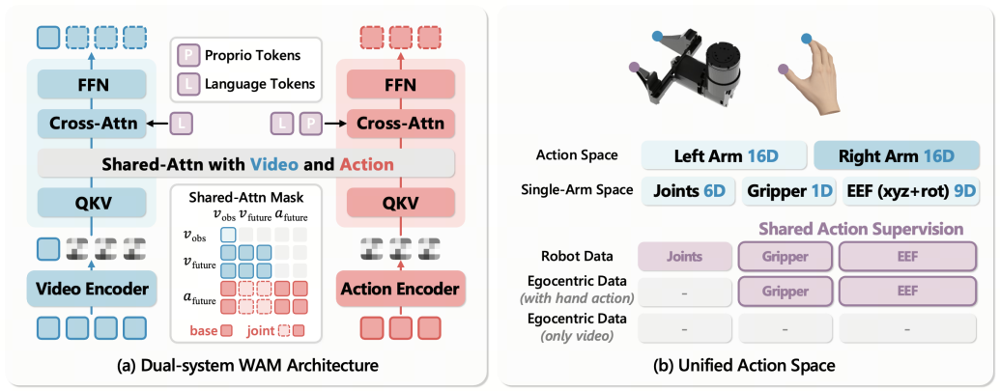
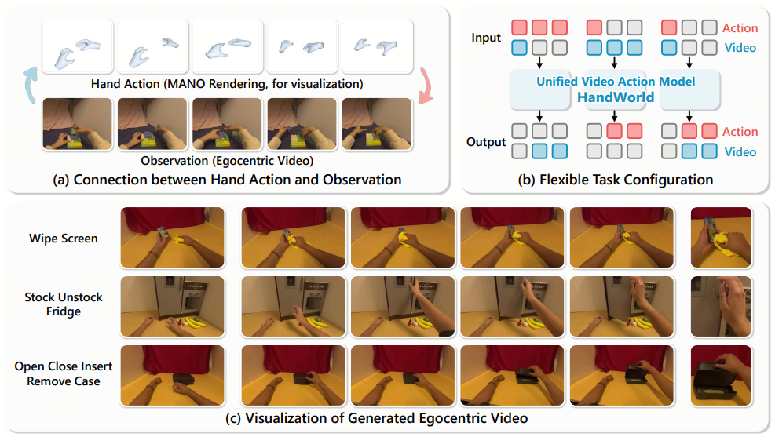
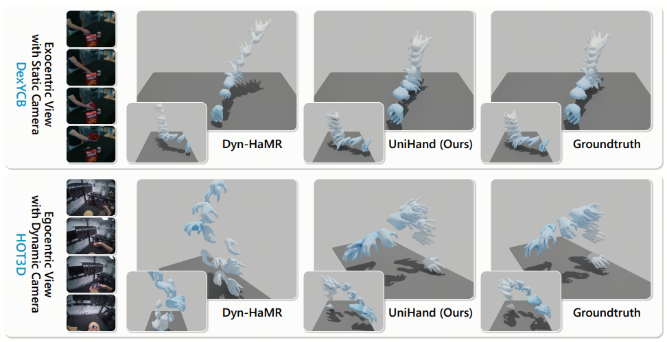
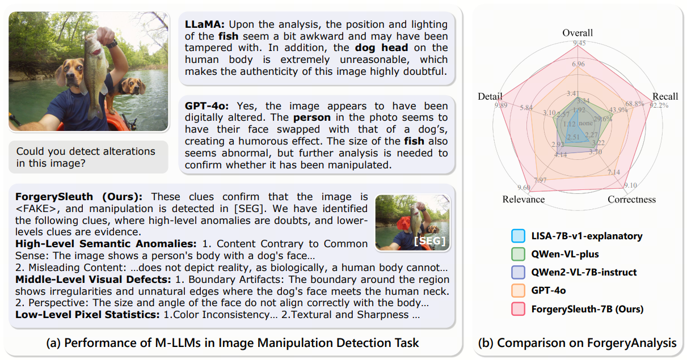

Zhihao Sun
PhD Student @ Fudan University
I am a third-year PhD student at Fudan University, advised by Prof. Zuxuan Wu. I'm interested in robotics and computer vision. My research focuses on egocentric intelligence, world action models, and embodied intelligence. I aim to build embodied agents that learn from large-scale human data, pushing the boundaries of what robots can perceive, understand, and do.
News
- HandWorld has been accepted to CVPR 2026!
- UniHand has been accepted to ICLR 2026!
- ForgerySleuth has been accepted to NeurIPS 2025!
Research
-

-

-

-

Experience
- – Present Research Intern, Horizon Lab, Horizon Robotics
- – Present PhD Student, Fudan University
- – Master's Student, Institute of Computing Technology, Chinese Academy of Sciences
Awards
- 2026 National Scholarship for Doctoral Students
- 2024 Beijing Outstanding Graduate (Master)